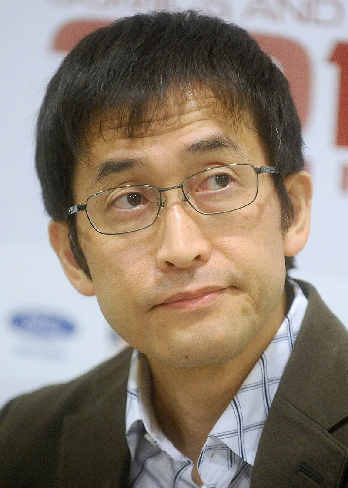

Born on 31 July 1963 in Sakashita, now a part of Nakatsugawa, Gifu. He began his experience in the horror world at a very young age; his two older sisters would read Kazuo Umezu and Shinichi Koga in magazines, and consequently, he began reading them too.
He first began writing and drawing manga as a hobby while working as a dental technician in around 1984.
Film director Guillermo del Toro cited on his official Twitter account that Ito was originally a collaborator for the video game Silent Hills, of which both Del Toro and game designer Hideo Kojima were the main directors. However, a year after its announcement, the project was canceled by Konami, the IP's owner. Itō and Del Toro would later lend their likenesses to Kojima's next project, Death Stranding.
Ito has received many awards for his work, including an Eisner Award for is manga adaptation of Mary Shelley's Frankestein.
In addition to Kazuo Umezu, Itō has cited Hideshi Hino, Shinichi Koga, Yasutaka Tsutsui, Edogawa Ranpo and H. P. Lovecraft as being major influences on his work. The universe Itō depicts is cruel and capricious; his characters often find themselves victims of malevolent unnatural circumstances for no discernible reason or punished out of proportion for minor infractions against an unknown and incomprehensible natural order.[10] Some of the recurring themes of Itō's work include jealousy, envy, body horror, seemingly ordinary characters who begin to act out of irrational compulsion, the breakdown of society, deep-sea organisms, and the inevitability of one's demise, all displayed through a realistic and simple design, which emphasizes the contrast between beauty and death. The events narrated are unpredictable and violent, and arise from normal situations.